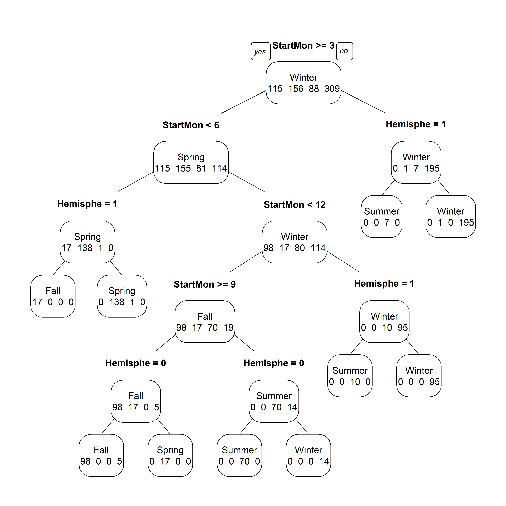

MADA Course - Tree based models
Andreas Handel
2019-11-18
Overview
In this unit, we will cover a class of models called classification and regression trees and extensions of such models.

An interesting classification tree. Source: xkcd.
Learning Objectives
- Understand what tree-based methods are and how to use them
- Know when it might be good to use a tree-based method
- Understand the advantages and disadvantages of single trees versus tree ensembles
Introduction
Generalized linear models assume that the predictor variables impact the outcome in a linear manner (or polynomial, for higher orders). Sometimes this might not be a good assumption, and some predictors might have a non-smooth impact on the outcome (e.g., if you go east-west across the world, the coordinates change smoothly, but at discrete values, the time zone changes and thus time jumps abruptly. If you were to plot longitude versus time, you would, therefore, see non-smooth jumps.)
Classification and regression trees (CART) - often referred to as trees - are one type of model that can handle such non-smooth relations between outcome and predictor. Trees have other nice features too. They can be used for both continuous and categorical outcomes, they can deal with missing values in the predictors, and they are - at least the basic trees - straightforward to understand even for non-experts.
Tree Examples
The following shows a tree from Afonso et al. 2012, Family Practice, which illustrates a kind of model that is very intuitive and could be easily understood by physicians and other laypeople. The outcome is binary, presence, or absence of flu.

The next example is a tree fit to the norovirus dataset we have been exploring. The outcome is categorical with 4 categories, the different seasons. You will re-create this tree in the exercise.

Building trees
The way one computes a tree is a little bit similar in concept to forward selection in a linear model. We start by looking at each predictor. We take the tree, which, when the outcome is split at some value of that predictor, leads to the best (cross-validated) performance increase in the model (e.g., lowest SSR/RMSE or highest Accuracy/F1 score). Let’s say we want to predict BMI, and our performance measure is RMSE of predicted value from the true outcome. The null model using no predictors gives us some value for the RMSE. We then try each predictor (let’s say we have exercise, calories, age, gender) and find that if we use exercise and assign everyone who exercises more than 23min per day one BMI value, and everyone who exercises less than 23min another BMI value, we get the best reduction in RMSE we could get (across all predictors and possible cut-off values). This is our first split using the exercise predictor at 23min. We now have a tree with one root and 2 nodes (in this case, they are leaves, which is the name for the terminal nodes).
We now take each leaf and run through all predictors again including the one we just used and see which predictor split at some value will further improve model performance. Let’s say we find that for those exercising more than 23min, we can split by gender and get 2 new BMI values, one for males exercising >23min and one for females exercising >23min, which gives the maximum reduction in RMSE. Similarly, we find that for the <23min exercise people, splitting at 1500 calories a day is best. We now have a tree with a root, 2 internal nodes, and 4 terminal nodes.
We keep building the tree in this way until some criterion is met (e.g., not more than n observations in a given leaf, no further increase in performance). Note that in this procedure, some predictors may never enter the model. In that way, a tree performs an automatic subset selection, i.e., it might decide to not use predictor variables it doesn’t find useful. Also, any predictor might be used more than once.
Algorithms that implement the tree building routine differ in their details, which is why you will see many different options in both mlr and caret. In general, if you have a good signal in your data, any algorithm should pick up on it.
Since trees have a tendency to overfit, it is common to regluarize them by including a penalty for tree size. For instance, if we were to minimize SSR/RMSE, we would add a penalty to the cost function, C, to get
\[C = SSR + \lambda T, \]
where T is the number of leaves of the tree. More leaves means a larger tree, which is being penalized. \(\lambda\) is a tuning parameter that needs to be determined using parameter tuning/model training.
Advantages and disadvantages of tree models
A great feature of trees is that they are relatively quick and easy to build and especially easy to understand. They can easily be communicated to and used by non-experts (e.g., doctors, other decision-makers). As such, trees (sometimes called decision diagrams or other names) are common in many fields. As mentioned, trees are also able to handle missing data in predictors, and they are often reasonably robust in the presence of collinear or near-zero-variance predictors since trees tend to use one of the variables and ignore the others. Often trees also don’t need normalization of predictors.
The main disadvantage of trees is that they usually have reduced performance compared to many other methods. Thus, if a simple, interpretable model is the primary goal, trees are ideal. If instead, a high-performance predictive model is the goal, trees are rarely the best choice.
Many trees (forests)
As just mentioned, a main disadvantage of a single tree model is that it often does not perform (predict) very well. It is, however, possible to build models which are combinations of many single trees, and which often have very good performance (but are less interpretable). The idea behind more sophisticated tree-based methods is to take multiple individual trees and add/average them together in a smart way to end up with an ensemble of trees that often performs much better than a single tree. Some of the most common approaches are Bagging (Bootstrap aggregation), Random Forests, and Boosting. We’ll cover each one very briefly.
Bagging
The main goal of bagging is to reduce variance, which is the main factor that generally negatively affects the performance of a single tree (even if one uses pruning/cross-validation). Remember that if we have N independent observations, each with the same variance/standard deviation, SD, the total variance is SD/N. If we had M datasets for the same process, each with N observations, and we built a model for each dataset, we could average over the models and thereby reduce the variance by 1/M. We don’t have M different datasets, but we can re-sample our existing data (using bootstrapping), and build a model for each sample. We can then, in the end, average over the different models to reduce variance. Here, each model is a tree, but we could also apply this approach to other models. The final model is the average of all the trees/individual models. Since the bagging procedure reduces the variance, individual trees are not pruned. Bagging leads to models with less variance and thus generally better model performance/predictive power. What is lost now is the ease of interpretation, since our final model is now the sum of a (possibly large) number of individual trees.
Random forest
The random forest model/algorithm is similar to bagging. The difference is that as we split each tree, instead of considering all possible predictors, we pick a random subset of predictors and only split on the best among those. Since we are artificially limiting ourselves, we obtain many trees that don’t perform too well on their own. However, this random choosing of subsets of predictors leads to more “diversity” in the tree structure (i.e., it avoids the greedy nature of the standard tree building algorithm). This helps in de-correlating the trees when we sum across them in the final model. Often this further improves model performance. The cost is the same as for bagging, namely the final model is a sum of trees which is hard to understand and interpret.
Boosting
Boosting takes a somewhat different approach than the other two. In this case, instead of averaging over full trees, we build many small trees. The procedure starts by building a tree with a specified, often small number of splits (this number is a tuning parameter). This small tree is added to the model, the change in performance is computed (e.g., reduction in RMSE/misclassification error) and a new tree is built that tries to reduce the leftover (residual) errors. In this form, many small trees are added, each one trying to take care of the under-performance produced by previous trees. In the end, one ends up with a sum of many small trees as the final model. This tree ensemble is expected to perform much better than each of the individual trees. Again, the final model is somewhat hard to interpret.
Advantages and disadvantages of multi-tree models
All the advantages mentioned for a single tree model apply to multi-tree models. The main additional advantage is that these models often have (much) improved performance compared to a single tree. It is often possible to use an algorithm that implements one of these multi-tree models and with little adjustment and tuning, obtain a model with excellent performance. It is, however, still important to tune/train the model.
I already mentioned the main disadvantage: These models are hard to interpret. If the goal is to have a user-friendly model that could be used by humans, trees are best. If the user is ok with typing values into a computer (or smartphone) and letting some algorithms run in the background and produce answers, then more complex models might be ok.
Another possible disadvantage of multi-tree models is that they generally take longer to train, so if speed is important, one might not be able to use all of these model variants to their full extent.
Additional comments
As mentioned, bagging and boosting are approaches that can be applied to methods other than trees. For instance, one can bag/boost linear models, GAM, etc.
The multi-tree methods described above are examples of what is often called ensemble methods. Boosting is an example of using an ensemble of weak learners, i.e., a combination of models that individually don’t perform that well, but when combined, they often have outstanding performance. The combination of different individual models/learners (weak or not) is often called model averaging/stacking, and such methods lead to some of the best-performing models in machine learning. For more on this, see e.g., the Stacked Models chapter of HMLR. We will not further cover these models, but if you have a situation where you need the best model performance available, such models might be worth looking at.
Further information
This interactive tutorial gives a very nice, visual introduction to machine learning in general and trees in particular. It covers and nicely illustrates some of the topics discussed here, as well as topics discussed in previous units.
For more on tree-based methods, see chapter 8 of ISLR, chapters 9-12 of HMLR and section 32.9 and 32.10 of ISL.